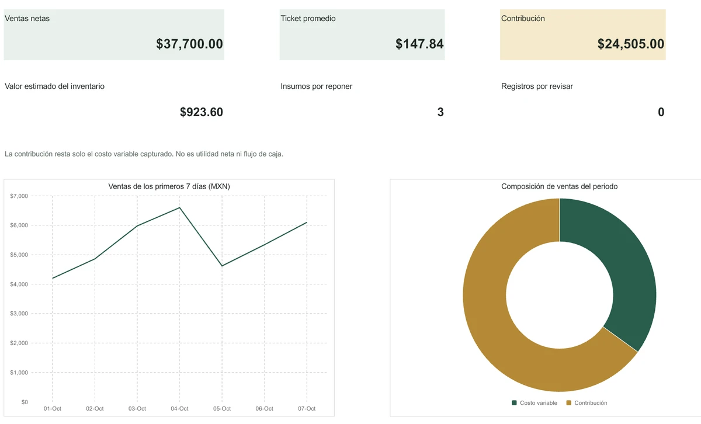

01 / EXCELControl de tu restaurante
Consulta el tablero y trabaja Ventas, Inventario, Movimientos, Platillo, Bebida, Equilibrio y Ayuda. Ejemplos editables y cinco gráficos.

Ampliar tablero real ↗Capacidad y forma de uso
62 cierres diarios, consolidando los turnos de cada día; 30 insumos, 150 movimientos y diez ingredientes por receta en los espacios preparados. El inventario acumula todos los movimientos del archivo y no depende del filtro de Ventas. Las recetas son independientes del catálogo de insumos. No conecta a caja ni descuenta ingredientes automáticamente desde ventas o recetas. Sin macros; importes de ejemplo en MXN.